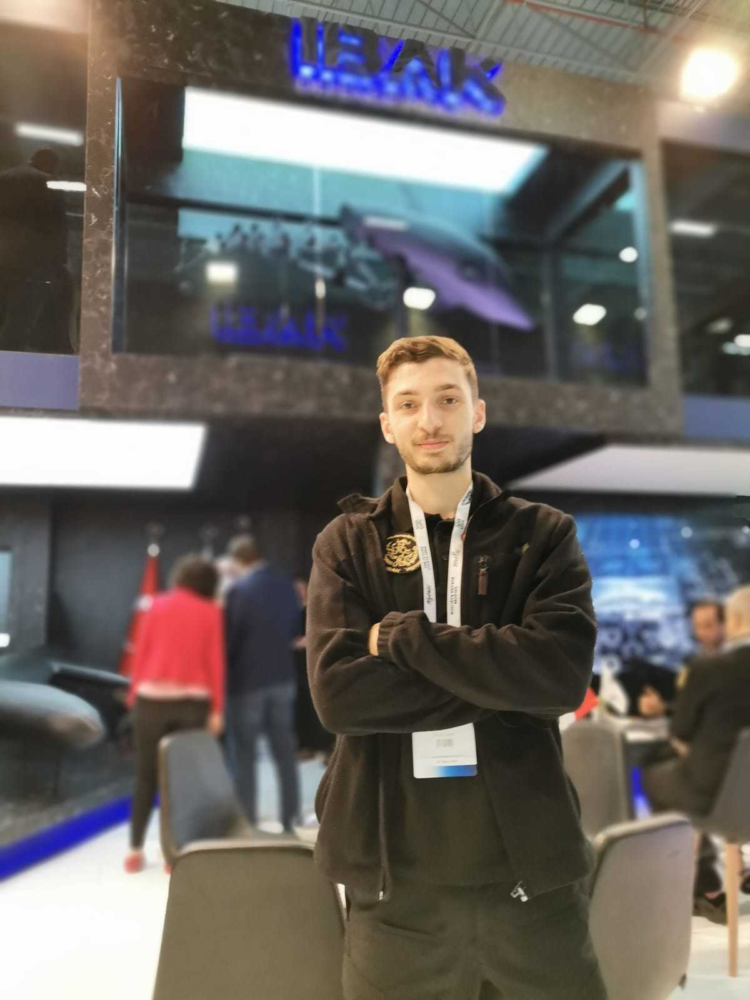
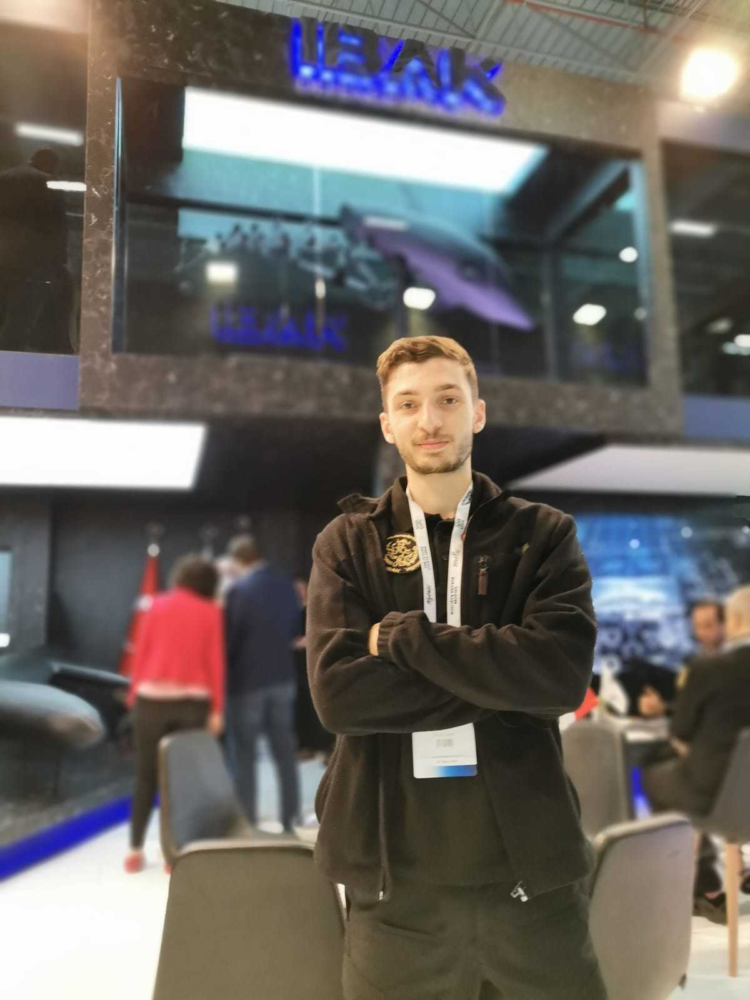

Project Overview
The Underwater Biomimetic Robot was designed as a contractor project for a Turkish defense company while I was working at Cyprus Robotics. The project focused on creating a robotic platform that mimics the swimming patterns and maneuverability of marine animals, specifically dolphin-like creatures.
Biomimetic robotics is an emerging field that draws inspiration from nature to solve complex engineering challenges. For underwater applications, traditional propeller-based systems have limitations in terms of noise, efficiency, and maneuverability. By mimicking the propulsion mechanisms of marine animals, we aimed to create a more efficient, quieter, and more maneuverable underwater vehicle.
The primary focus of my work was on the specialized tail mechanism, which required detailed kinematic and dynamic analyses to optimize movement patterns and improve maneuverability. The successful prototype was showcased at the SAHA EXPO International Defence & Aerospace Exhibition in Istanbul.
Technical Specifications
| Feature | Specification |
|---|---|
| Dimensions | Length: 120cm, Diameter: 25cm |
| Weight | 12kg |
| Max Speed | 5 knots (9.26 km/h) |
| Depth Rating | 100m |
| Power Source | Lithium-ion battery pack (3 hours operation) |
| Actuators | 3 waterproof servo motors |
| Materials | Waterproof ABS housing, aluminum internal frame, flexible silicone tail |
| Control System | Onboard microcontroller with wireless communication |
Tail Mechanism Design
The tail mechanism was the most critical component of the robot, responsible for propulsion and maneuverability. The design needed to replicate the efficient swimming motion of marine mammals while remaining mechanically robust for underwater operation.

Schematic diagram of the multi-joint tail mechanism with servo actuators
The final design featured a multi-joint structure with these key components:
Vertebral Column Structure
A series of interlocking segments forming a flexible spine that can bend in the vertical plane. Each segment was designed with precise tolerances to allow controlled flexibility while maintaining structural integrity.
Servo-Driven Actuation
Three high-torque waterproof servo motors positioned strategically along the spine to create a natural wave-like motion. The servo arrangement allows for varying amplitudes and frequencies to achieve different swimming patterns and speeds.
Flexible Outer Skin
A specially formulated silicone covering with variable thickness and elasticity to optimize hydrodynamic performance. The skin was designed to stretch on the outside of bends and compress on the inside, mimicking natural tissue mechanics.
Caudal Fin Design
A carefully shaped tail fin with optimized aspect ratio and flexibility gradient. The fin stiffness varies from the center to the edges, allowing it to deform under water pressure for increased thrust efficiency.
Motion Analysis and Optimization
To achieve realistic and efficient swimming motion, extensive kinematic and dynamic analyses were conducted using both computational models and physical prototypes.
The motion analysis involved:
- Detailed study of dolphin swimming kinematics from biological research
- Development of mathematical models to describe the wave propagation along the tail
- CFD (Computational Fluid Dynamics) simulations to optimize hydrodynamic performance
- Iterative prototyping and testing to refine the mechanical design
Key parameters that were optimized included:
| Parameter | Optimization Goal | Result |
|---|---|---|
| Tail Beat Frequency | Balance between speed and energy efficiency | 0.5 - 2.5 Hz depending on desired speed |
| Amplitude Distribution | Realistic motion pattern with maximum thrust | Progressive increase from body to fin (5° to 35°) |
| Wave Phase Velocity | Efficient propulsion mechanics | 1.2 times the forward swimming velocity |
| Joint Stiffness | Balance between control and natural dynamics | Variable based on swimming mode |
Testing and Validation
The development process involved multiple testing phases to validate the design and performance of the robot in real-world conditions:


 

Laboratory Mechanical Testing
Initial tests in dry conditions to validate the mechanical system's durability, range of motion, and control accuracy.
Controlled Pool Testing
Tests in a controlled water environment to measure propulsion efficiency, speed, maneuverability, and power consumption.
Open Water Field Tests
Final validation in representative sea conditions to assess performance in varying water currents, depths, and temperatures.
Public Demonstration
The prototype was successfully demonstrated at the SAHA EXPO International Defence & Aerospace Exhibition in Istanbul, receiving positive feedback from industry experts.
Applications and Capabilities
The underwater biomimetic robot was designed primarily for defense applications, but the technology has potential uses in various fields:
- Covert Surveillance: Low acoustic and visual signature for undetected monitoring
- Marine Research: Less disruptive observation of marine life compared to conventional underwater vehicles
- Infrastructure Inspection: Ability to navigate in confined spaces around subsea structures
- Environmental Monitoring: Long-duration missions for water quality assessment and ecosystem studies
- Search and Recovery: Maneuverable platform for locating underwater objects
The biomimetic approach offers several advantages over traditional underwater vehicles:
Enhanced Maneuverability
The flexible body allows for tighter turning radii and more complex movement patterns than rigid-hull vehicles with propellers.
Reduced Acoustic Signature
The undulating propulsion system generates less noise than conventional propellers, making it suitable for sensitive operations.
Improved Energy Efficiency
Biomimetic swimming mechanics can achieve higher propulsive efficiency than conventional thrusters, extending operational range.
Natural Appearance
The dolphin-like appearance helps the robot blend into the marine environment, making it less conspicuous during operations.
Challenges and Solutions
The development of the biomimetic underwater robot presented several engineering challenges that required innovative solutions:
| Challenge | Solution |
|---|---|
| Waterproofing electrical components | Developed a dual-layer sealing system with redundant O-rings and pressure-compensated electronics housing |
| Balancing flexibility and durability | Implemented a composite design with rigid segments and flexible joints using specialized marine-grade materials |
| Achieving efficient propulsion | Conducted iterative CFD simulations and physical tests to optimize tail geometry and motion patterns |
| Control system complexity | Developed a hierarchical control architecture with coordinated joint actuations to simplify user operation |
| Manufacturing feasibility | Designed components with consideration for production methods and assembly requirements |
Future Development
The successful prototype demonstration has opened up several avenues for future development and enhancement:
- Integration of advanced sensor packages for autonomous operation
- Development of more sophisticated control algorithms based on artificial intelligence
- Optimization of energy storage systems for extended mission duration
- Scaling the technology for different size vehicles (from mini to full-scale)
- Further refinement of the biomimetic motion for even greater efficiency
- Exploration of additional marine animal locomotion patterns (such as ray-like or eel-like motion)
The project has established a strong foundation for continued innovation in biomimetic underwater robotics, with potential applications extending beyond the original defense focus.